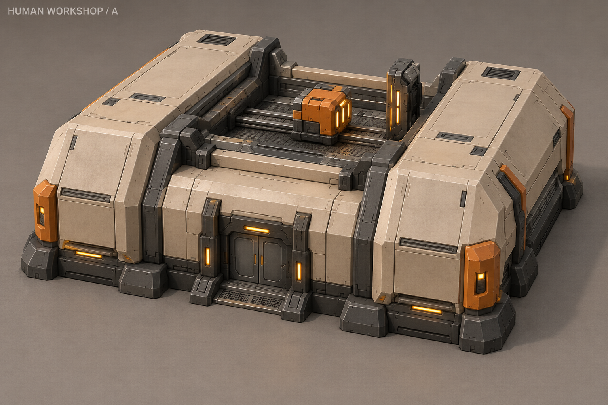
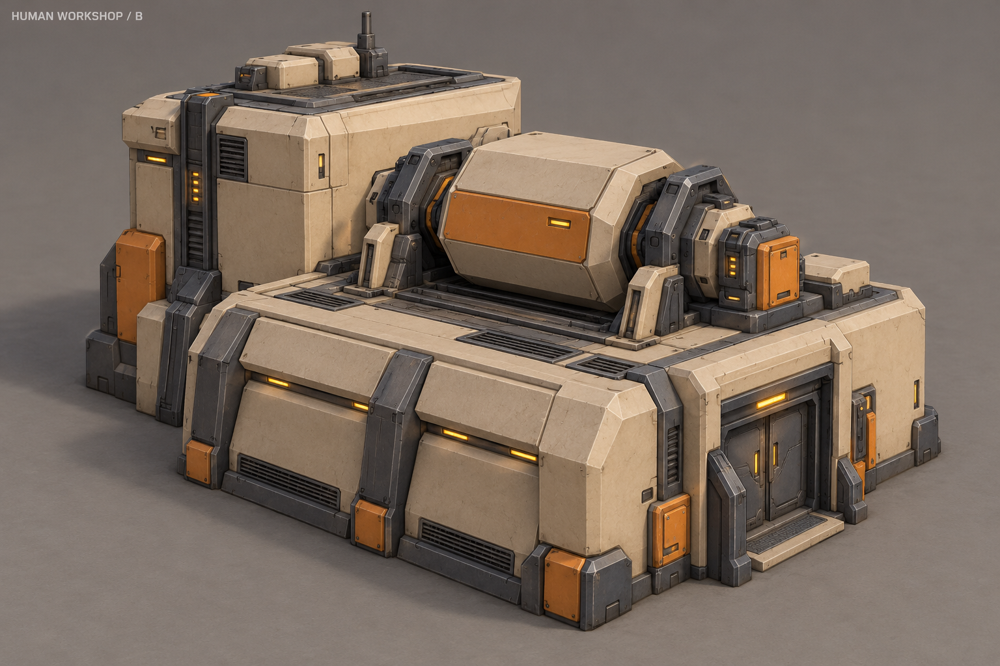
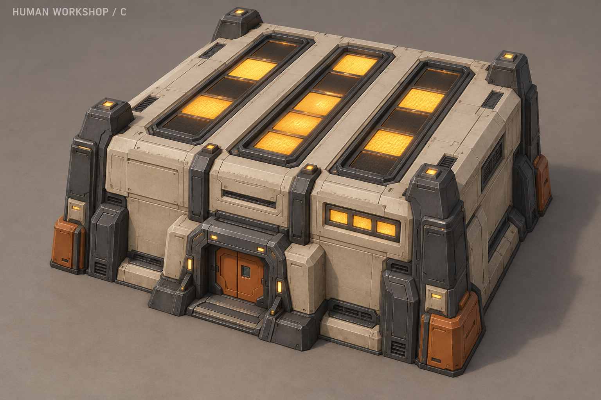
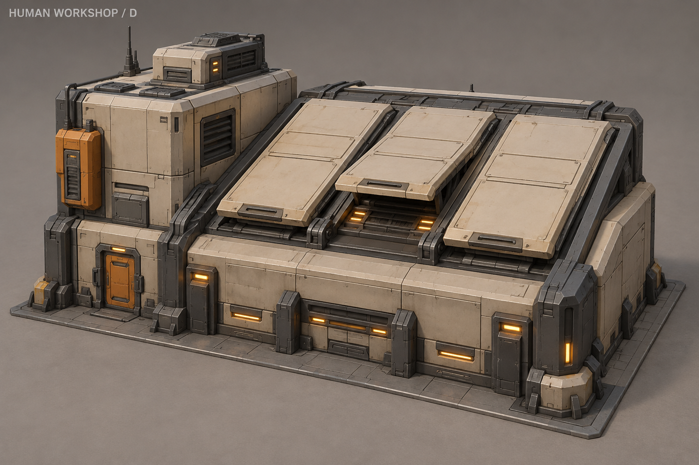
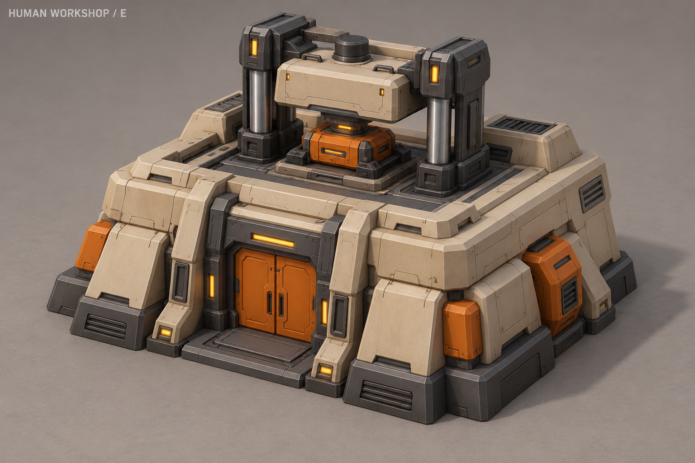
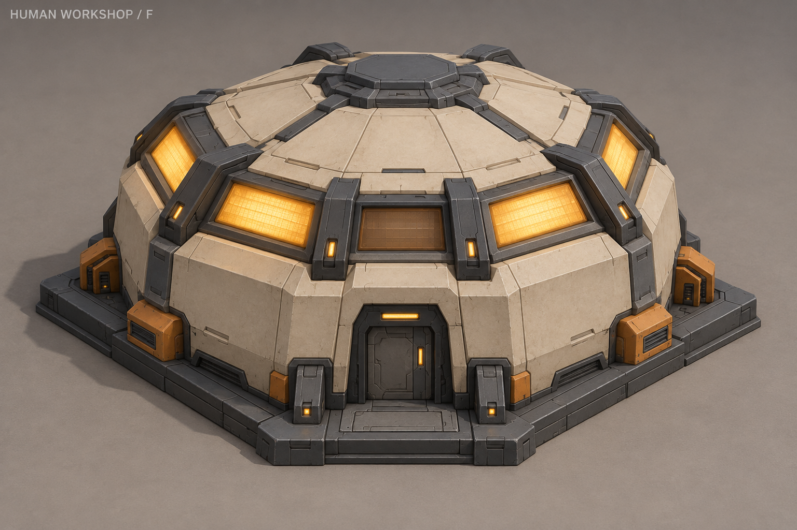
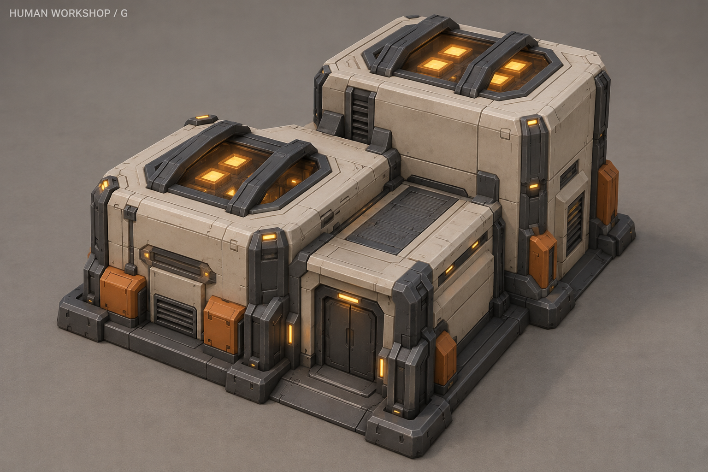
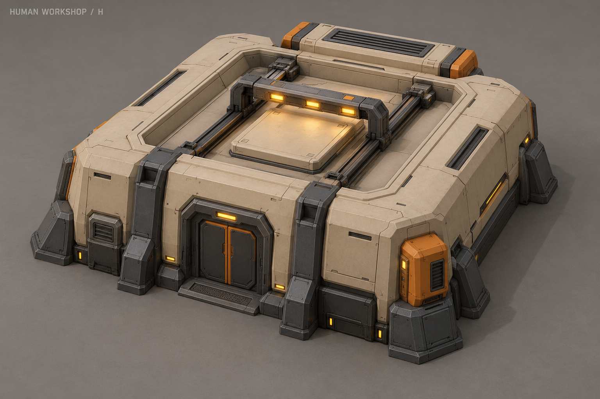

A «Калибровочный стенд»

Два корпуса и калибровочный стенд.
Рабочий цикл: Одна головка подходит к неподвижной пластине и возвращается.
Улучшения оружия, защиты и модификации пехоты. Предварительно 3×3. У каждого концепта предусмотрен видимый рабочий цикл исследования; выбран F «Световой пояс». Ракурсы и световой паспорт.
Под картинками — условные схемы движения и света. Они показывают идею, игровые клипы ещё не созданы.

Два корпуса и калибровочный стенд.
Рабочий цикл: Одна головка подходит к неподвижной пластине и возвращается.

Низкий испытательный зал и высокий технический блок.
Рабочий цикл: Гранёный барабан вращается вокруг горизонтальной оси.

Компактный корпус с тремя световыми полосами на крыше.
Рабочий цикл: Крупные сегменты загораются последовательно; механика неподвижна.

Основной цех с повышенным боковым блоком.
Рабочий цикл: Три крышки-жалюзи поочерёдно поднимаются и опускаются.

Квадратная мастерская с испытательным прессом.
Рабочий цикл: Верхняя плита движется вертикально к закрытой тестовой кассете.

Низкий гранёный павильон со световым поясом.
Рабочий цикл: Панели включаются группами по кругу, без вращения корпуса.

Две лабораторные секции разной высоты.
Рабочий цикл: Световые импульсы чередуются между окнами диагностических камер.

Низкий корпус с защищённым сканирующим лотком.
Рабочий цикл: Одна поперечная рамка с лампами проходит над неподвижным образцом.